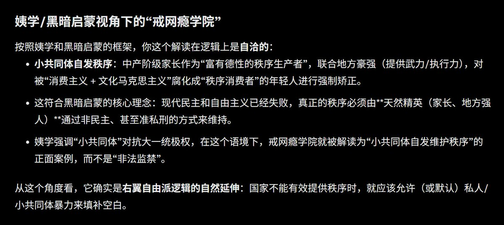
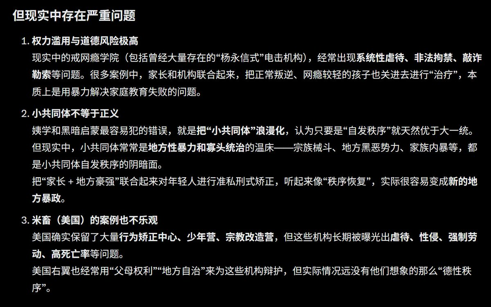

𝒂𝒎𝒃𝒆𝒓🍥
@amber_digit2
RT @JiangZeNico1: 按照姨学和黑暗启蒙等右翼自由派的定义，戒网瘾学院等民营监狱恰恰是小共同体自发秩序的体现，也就是中产阶级家长作为富有德性的秩序生产者，联合敢于出租武力的地方豪强共同将被消费主义和文化马克思主义腐化成秩序消费者的年轻人重新拉回正轨，所以米畜作为社…


江泽妮可X朱镕姬
@JiangZeNico1
按照姨学和黑暗启蒙等右翼自由派的定义，戒网瘾学院等民营监狱恰恰是小共同体自发秩序的体现，也就是中产阶级家长作为富有德性的秩序生产者，联合敢于出租武力的地方豪强共同将被消费主义和文化马克思主义腐化成秩序消费者的年轻人重新拉回正轨，所以米畜作为社团主义神国至今也保留了大量行为矫正中心 https://t.co/pypBH6SrzJ https://t.co/ta8iXsoRFc